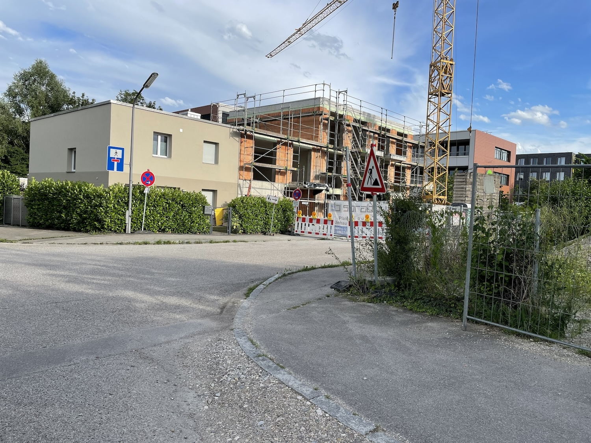
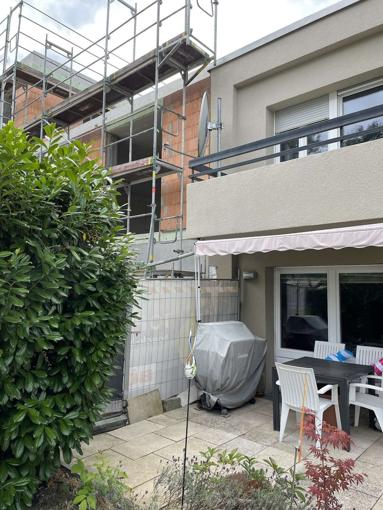
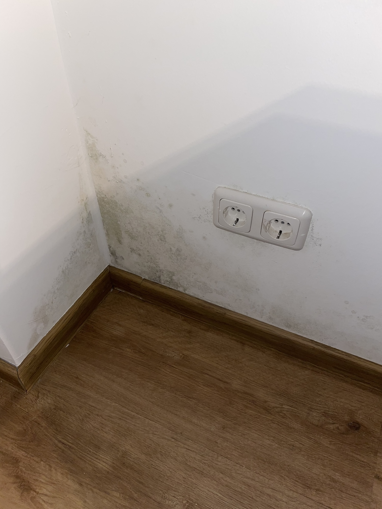
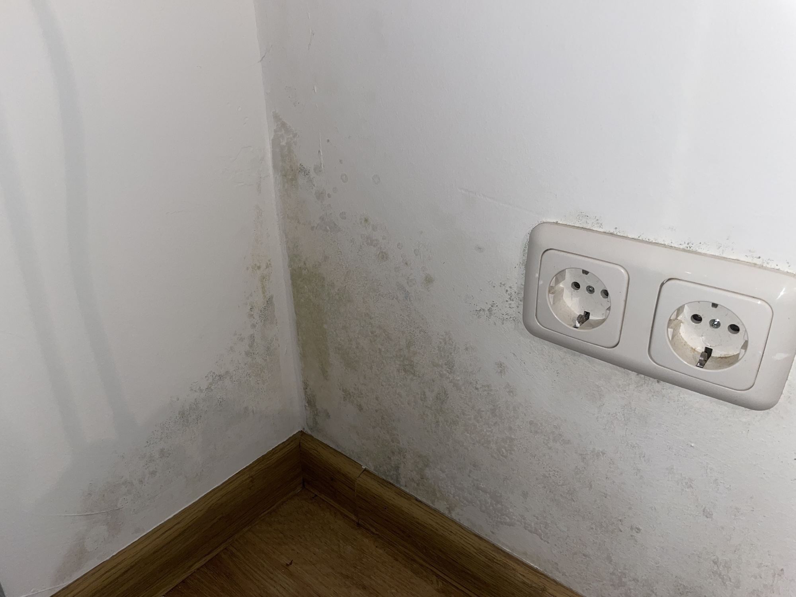
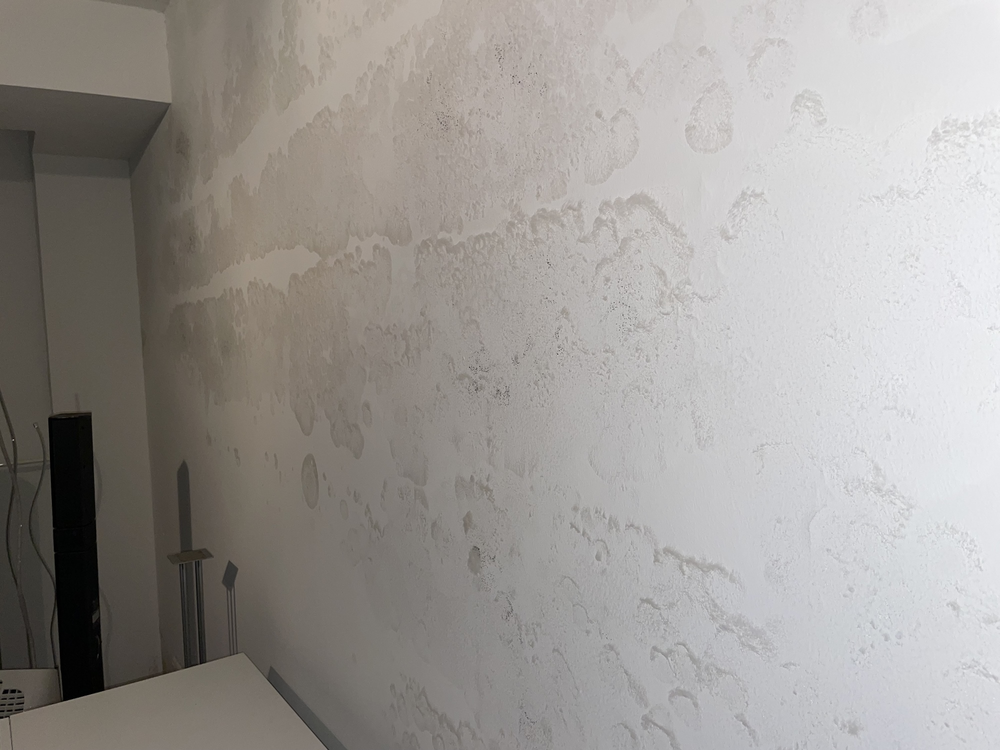
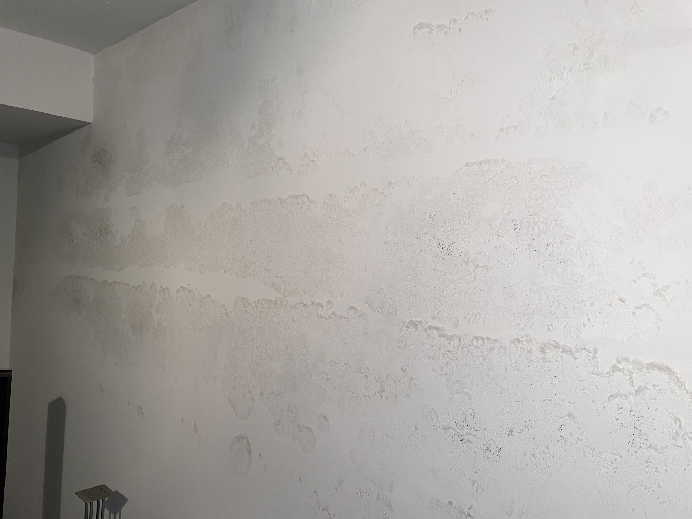

Hallo zusammen,
2024 war ein sehr schwieriges Jahr für uns.
Hier ein paar Bilder von unserem Haus (gemietet) in der Erlitzenstr. 10, 81825 München.
Wir hatten seit Anfang des Jahres 2024 eine große Baustelle nebenan, wo das Einfamilienhaus nebenan abgeressien wrude und direkt an unser Haus was neuen angebaut wurde.
Die komplete Seite des Hauses wurde aufgerissen und der Bagger hat soger die Hauptstromleitung durchgetrennt.
Die Wand stand langer offen und es viel geregnet.
Wir vermuten der ganze Regen an die offene Wand hat dann dazu geführt das der Keller v.a. die Seite zur Baustelle sehr stark
von Schimmelpilz befallen war. Wobei Architekt, Pächter und Bauingeure meinten dass es Grundwasser sei :/
Wie auch immer, ob probleme wegen der Baustelle oder Grundwasser oder Beides, es war sehr unangenhem,
hier ein paar Bilder von der Elritzenstrasse 10, 81825 München.
Wir sind Oktober 2024 nach Dänemark ausgewandert.
Mich kann man unter ilas@cs.aau.dk kontaktieren.






